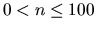

Having several accounts on
several servers one has to remember many passwords. You can imagine a situation
when someone forgets one of them. He/she remembers only that it consisted of
words x, y and z as well as two digits: one at the very beginning and the other one at the
end of the password.
Your task is to write a program which will generate all possible password on
the basis of given dictionary and set of rules. For the example given above the
dictionary contains three words: x, y, z, and the rule is given as 0#0 what stands for SPMamp<digit><word_from_the_dictionary><digit>&.
First line
contains a number of words in the dictionary (n). The words themselves
are given in n consecutive lines. The next line contains number of rules
(m). Similarly consecutive m lines contain rules. Each rule
consists of characters `#'
and `0' given in arbitrary order. The character
`#' stands for word from the dictionary
whilst the character `0'
stands for a digit.
Input data may contain many sets
of dictionaries with rules attached two them.
For each set
`dictionary + rules' you should output two hyphens followed by a linebreak and
all matching passwords given in consecutive lines. Passwords should be sorted
by rules what means that first all passwords matching the first rule and all
words must be given, followed by passwords matching the second rule and all
words, etc. Within set of passwords matching a word and a rule an ascending
digit order must be preserved.
Assumptions: A number of words in the dictionary is greater than 0 and
smaller or equal to 100 ( ). Length of the word is greater
than 0 and smaller than 256. A word may contain characters `A'..`Z',`a'..`z',`0'..`9'.A number of rules is smaller than 1000, and a rule is shorter that 256
characters. A character `0'
may occur in the rule no more than 7 times, but it has to occur at least once.
The character `#' is not mandatory
meaning there can be no such characters in the rule.
2root2super1#01admin1#0#
--root0root1root2root3root4root5root6root7root8root92super02super12super22super32super42super52super62super72super82super9--admin0adminadmin1adminadmin2adminadmin3adminadmin4adminadmin5adminadmin6adminadmin7adminadmin8adminadmin9admin